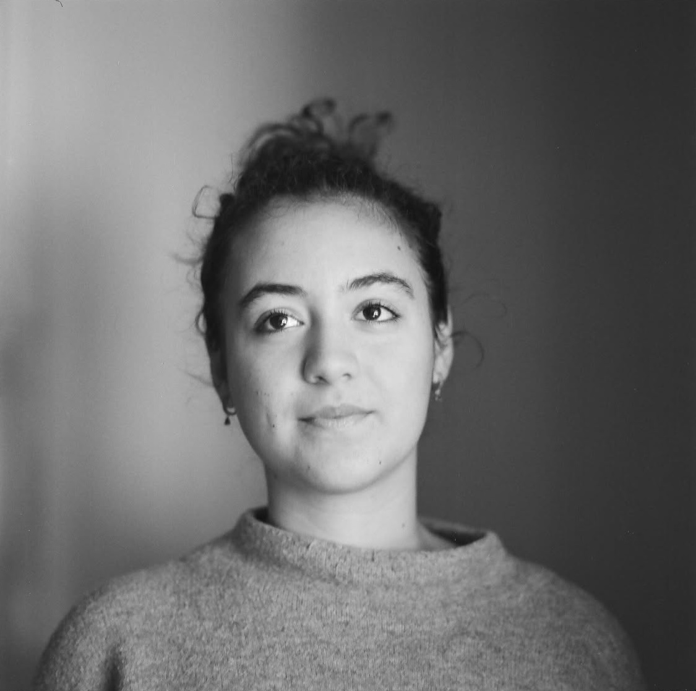

Sono Giulia Amodio, studentessa di Design della Comunicazione al Politecnico di Milano. Il mio lavoro si muove tra identità visiva, progettazione editoriale, tipografia e ricerca visiva, con un’attenzione particolare al rapporto tra concetto, forma e narrazione.
Nei miei progetti cerco di costruire sistemi visivi capaci di raccontare un’idea in modo chiaro, sensibile e coerente. Mi interessa il modo in cui immagini, parole, ritmo e materiali possono dialogare tra loro per dare forma a esperienze visive riconoscibili.
Tra gli ambiti del Design della Comunicazione quello che più mi interessa è l'editoria. Nella main page di questo sito troverete i progetti editoriali più interessanti che ho realizzato nel corso della mia formazione.
WORK EXPERIENCE
Scuola dell’infanzia Via Pastrengo, Milano — Teacher’s assistant
Scuola dell’infanzia Via Ruffini, Milano — Teacher’s assistant
Milano — Homework support and private tutoring for students
ESPERIENZE FORMATIVE e VOLONTARIATO
Fondazione Francesco Rava, Milano — Volunteer work
La Repubblica, Milano — Work-based learning experience
Digital Design Days, Superstudio Più, Via Tortona Milano — Work-based learning experience
PROGETTI PERSONALI
All Blacks Volley — Logo Design
All Blacks Volley — Web design